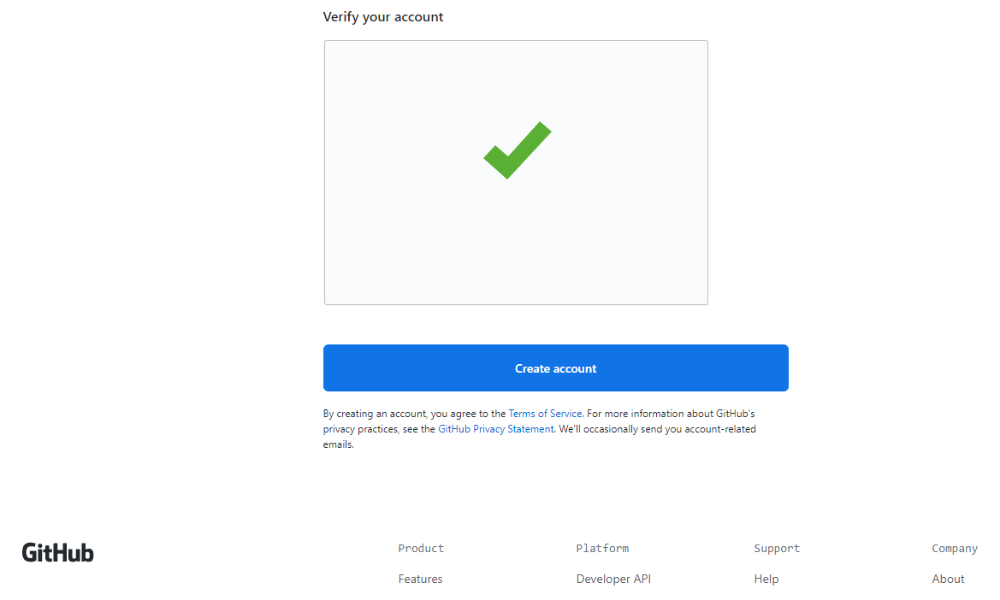
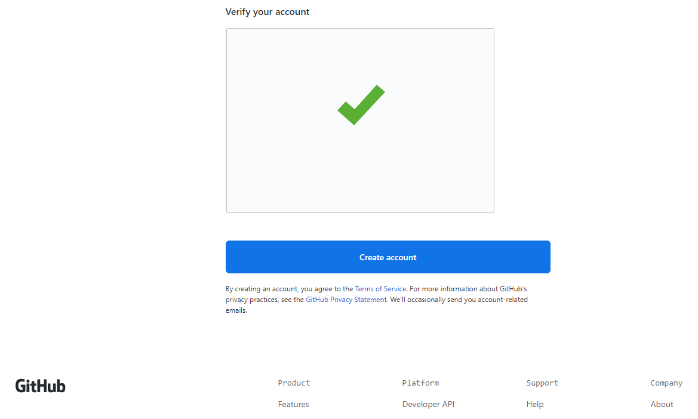
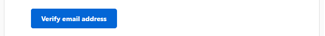
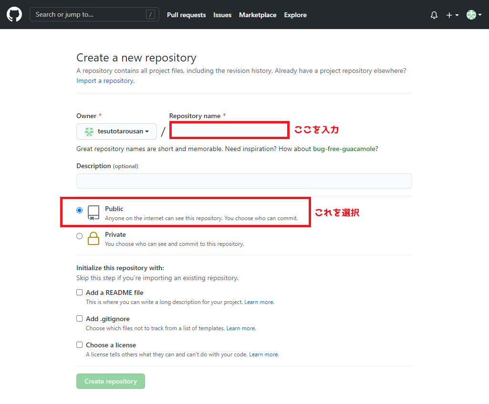
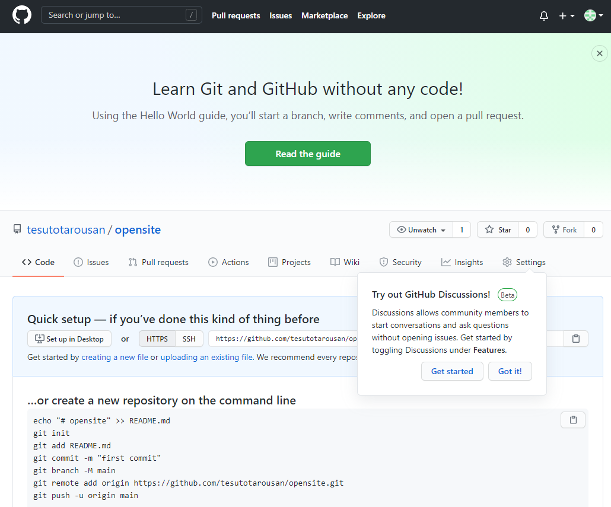
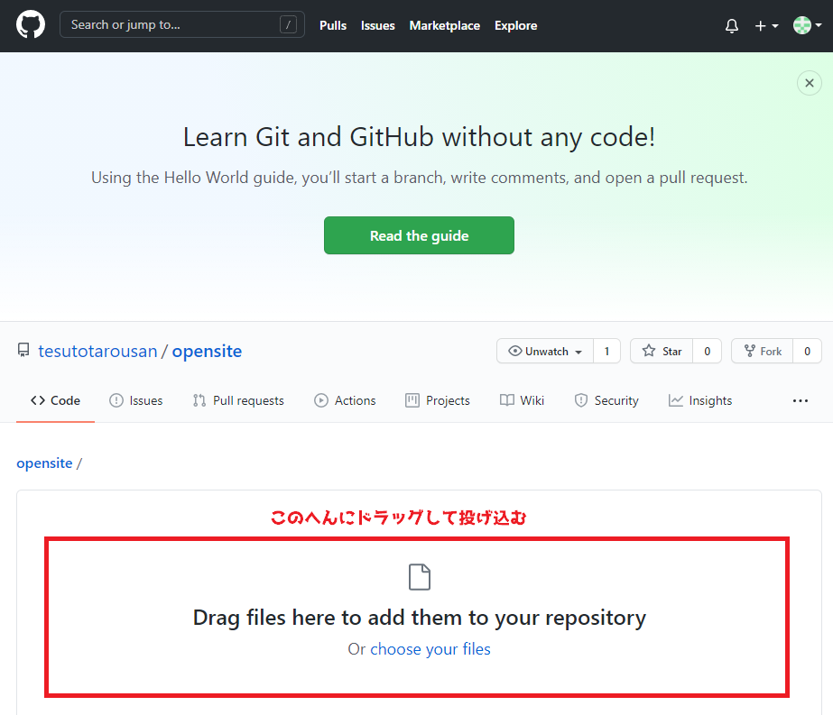
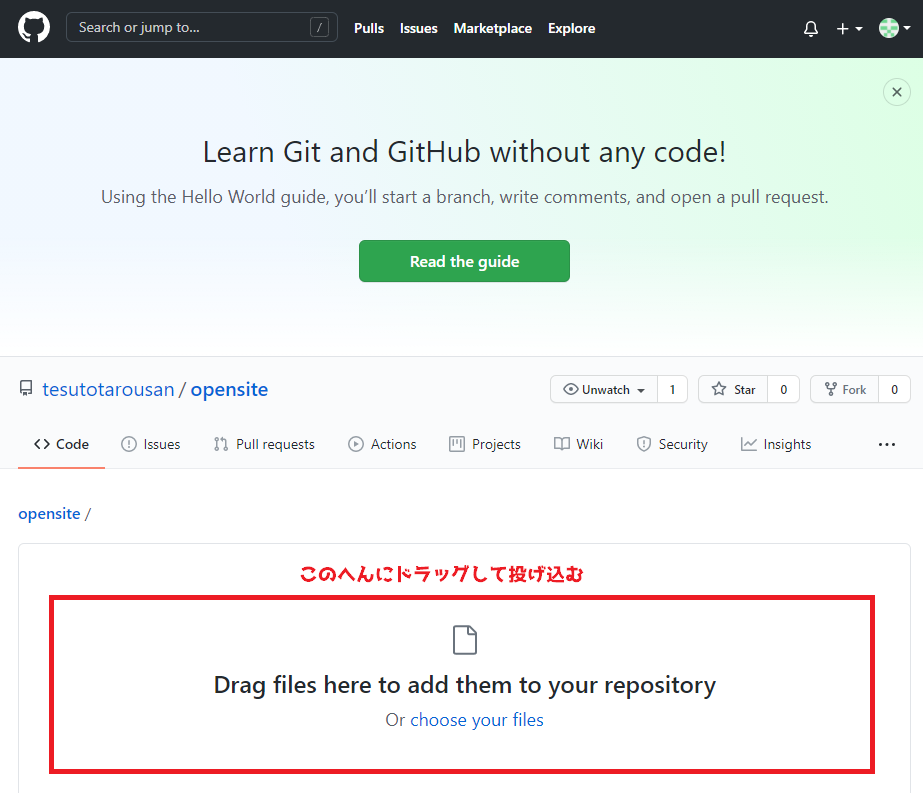
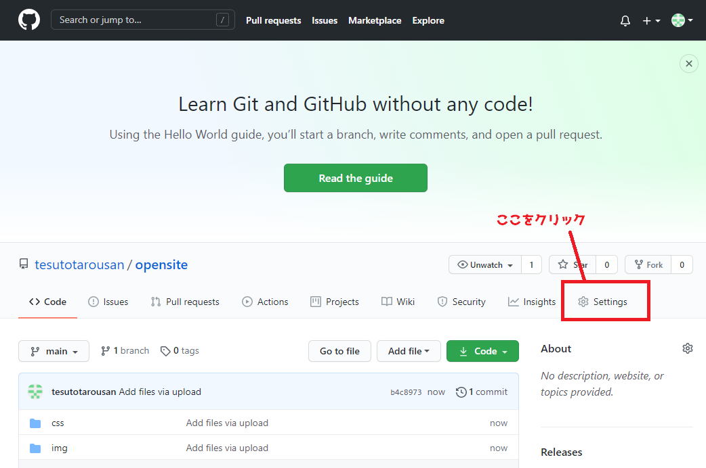
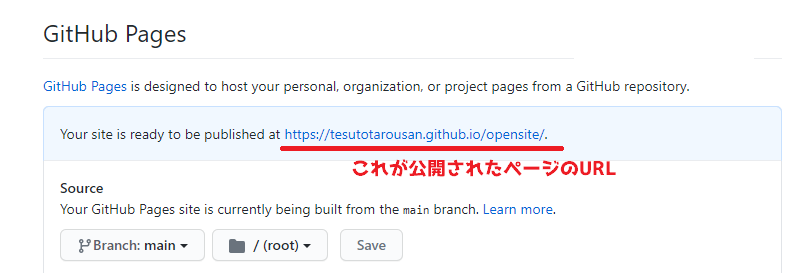

このページにはなーに？
このページではGitHubというサイトのGitHub pagesというサービスを利用して無料で静的なサイトを公開する手順を解説します。
※Windows10でやったのでMacだと画面が少し違うかも。だいたい一緒だと思います。
※ここでの静的なサイトとはHTML/CSS、Javascriptのみを使用して作成したページの事を指します。
※PHPなどの動作は多分できないと思います（多分）。
用意するもの
必要なものは以下の２つです。
・メールアドレス
・公開するHTML
手順１
GitHubのアカウントを作成する
まずはGitHubを使うためのアカウントを作成しましょう。
※すでにGitHubアカウントを所有している場合は次の手順まで飛ばしてOK⇒
こちらからGitHubのアカウント新規作成画面を開いてください→GitHubアカウント新規作成
 

Username、Email address、Passwordを入力し、ロボットじゃないですチェックをクリアしたら下にある「Create account」を押してアカウントを作成しましょう。
Usernameは自由に登録してOKですが、後で後悔するURLの一部に含まれるので恥ずかしすぎない名前にしましょうね。

上のような画面になったらOK。
アカウントは作成されましたが、今の状態ではまだメール確認が終わっていないため作業が進められません。
アカウント作成時に登録したメールアドレスを確認しましょう。
Githubから確認メールが届いているハズなので、そのメールを開いて「Verify email address」を押します。
上のような画面が開いたら確認完了です。
手順２
GitHubのリポジトリを作成する
GitHubアカウントの用意ができたので、まずはリポジトリを作成しましょう。
画面真ん中左くらいにある「Create a repository」を押して新規作成です。

下の画像のようなリポジトリの新規作成画面が開くと思います。
Repository nameだけ入力すればOKです。
Repository nameもUser nameと同じく後で公開するページのURLに含まれるため、適度な恥ずかしさの名前にしましょう。
真ん中らへんにあるPublic/Privateのラジオボタンは初期表示のままPublicを選択します。
Privateにしてしまうとページが公開できなくなるので注意。
Repository nameの入力が終わったら下にある「Create repository」を押します。
下の画像のような画面が表示されたらリポジトリの作成成功です。
この画面が作成したリポジトリの管理画面になります。
手順３
リポジトリにファイルをアップロードする
リポジトリの作成ができたので、公開するページのファイルをアップロードします。
管理画面の真ん中の少ししたにある「uploading an existring file.」というリンクを押してファイルをアップロードする画面に行きます。
文字が小さいので良く探しましょう。
知覚に表示されている「Try out Github Discussions!」のところは無視しても良いし「Got it!」を押して消しても良いです。

アップロードしたいファイルを選択してドラッグし、画面の真ん中にでている「Drag files here to add them to your repository」と書いてある所にファイルを投げ込みます。
圧縮などはしなくてOK。サイトの中身を丸ごと投入します。
 

上手に放り込めたら「Commit changes」を押してアップロードを実行しましょう。
※間違えて投げ込んでしまったファイルなどは、ファイル名の右側に表示される「×」のボタンで削除できます。

上のような画面が表示されたらアップロード成功です。
※アップロードしたファイルによって微妙に違うのでだいたいこんな画面。
手順４
GitHub pagesを設定してアップロードしたファイルを公開する
ファイルのアップロードができたら、いよいよページを公開する設定を行いましょう。
リポジトリの管理画面の右側にあるSettingsを押して設定画面に移行します。
設定画面を下にスクロールしていき、GitHub Pagesを探します。
※けっこう下の方です。


GitHub pagesを見つけたら、その中のSourceを編集します。
Noneとなっているプルダウンのボタンを押して、mainを選択してください。


Soureceを編集するとSaveボタンが表示されるので、押します。

設定が保存され、設定画面が更新されます。
もう一回下までスクロールしてGitHub pagesの設定が変更されているのを確認してください。


設定が更新されていたら準備OK！
「Your site is ready to be published at ~~~」と表示されていると思います。
「~~~」の所があなたのページのURLになっています。
開いてみましょう！
終わり！